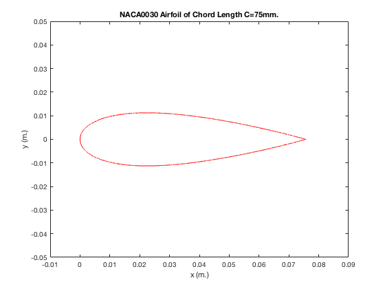
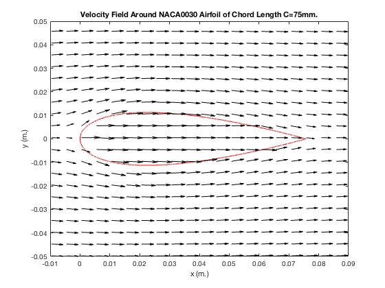
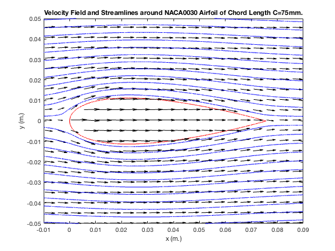
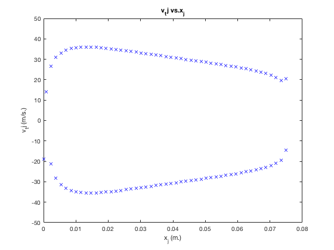
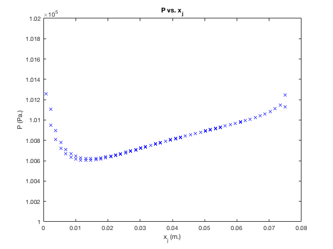

Chapter 8 Coding Challenge: Panel Methods
Zach Swain, 4/30/18, All files available at https://www.github.com/zswain/MEEG332
Contents
clear all
Part 1
x = [0:.0001:.0757]; %given polynomial doesn't converge to 0 at .075 but at .0757, use to create finite domain C = .075; %given chord length in meters Z = x/C; %given zeta parameter y1 = ((.0225)*((1.4845*sqrt(Z))-(.63*Z)-(1.758*(Z.^2))+(1.4215*(Z.^3))-(.5075*(Z.^4)))); %given polynomial shape y2 = -y1; %symmetric airfoil, no camber or angle of attack figure(1) %plot airfoil shape plot(x,y1,'r') hold on plot(x,y2,'r') title('NACA0030 Airfoil of Chord Length C=75mm.') xlabel('x (m.)') ylabel('y (m.)') xlim([-.01 .09]) ylim([-.05 .05]) hold off
Part2
N = 100; %use 100 corners/sides in approximate airfoil polygon x1 = linspace(x(1),x(length(x)),N/2); %top finite x values for N = 100 x1 = x1(1:end-1); %as to not overlap points with bottom x2 = linspace(x(length(x)),x(1),N/2); %bottom finite x values for N = 100 x3 = [x1,x2]; %finite x values for N = 100 Z2 = zeros(1,(N-1)); %set up to store new finite zeta values i = 1; %define i for iterating while i <(N-1) Z2(1,i) = (x3(1,i))/C; %define finite zeta values at the points of interest i = i+1; %iterate i end y3 = zeros(1,(N-1)); %set up to store new finite y values i = 1; %define i for iterating while i < (N-1) if i < (N/2) y3(1,i) = ((.0225)*((1.4845*sqrt(Z2(1,i)))-(.63*Z2(1,i))-(1.758*((Z2(1,i)).^2))+(1.4215*((Z2(1,i)).^3))-(.5075*((Z2(1,i)).^4)))); %define top finite y values with finite zeta values end if i >= (N/2) y3(1,i) = -((.0225)*((1.4845*sqrt(Z2(1,i)))-(.63*Z2(1,i))-(1.758*((Z2(1,i)).^2))+(1.4215*((Z2(1,i)).^3))-(.5075*((Z2(1,i)).^4)))); %define bottom finite y values with finite zeta values end i = i+1; %iterate i end
Part 3
L = zeros(length(x3)-1,1); %set up to store segment lengths deltaXList = zeros(length(x3)-1,1); %set up to store dx values deltaYList = zeros(length(x3)-1,1); %set up to store dy values i=1; %define i for iterating while i < (N-1) deltaXList(i,1) = (x3(1,i+1)-x3(1,i)); %define dx per i deltaYList(i,1) = (y3(1,i+1)-y3(1,i)); %define dy per i L(i,1) = sqrt((deltaXList(i,1)).^2+((deltaYList(i,1)).^2)); %define segment length per i i = i+1; %iterate i end L;
Part 4
mids = zeros(length(L),2); %set up to store midpoints i = 1; %define i for iterating while i < (length(L)) mids(i,1) = ((x3(1,i+1)+x3(1,i))/2); %define x values at midpoints mids(i,2) = ((y3(1,i+1)+y3(1,i))/2); %define y values at midpoints i = i+1; %iterate i end
Part 5
e_t = zeros(length(L),2); %set up to store unit tangent vectors e_n = zeros(length(L),2); %set up to store unit normal vecotrs i = 1; %define i for iterating while i < (N-1) e_t(i,1) = ((x3(1,i+1)-x3(1,i))/L(i,1)); %define the x component of unit tangent vector per i e_t(i,2) = ((y3(1,i+1)-y3(1,i))/L(i,1)); %define the y component of unit tangent vector per i e_n(i,1) = -(e_t(i,2)); %define the x component of unit normal vector per i e_n(i,2) = e_t(i,1); %define the y component of unit normal vector per i i = i+1; %iterate i end
Part 6
N = 100; %N still > 50. only emphasizing, no redef Uinf = 25; %given U infinity in meters per second b = zeros(length(mids),1); %set up to store given-defined b parameter A_ij = zeros(length(mids),length(mids)); %set up to store given-defined Aij parameter for j=1:length(mids) b(j,1) = Uinf*(deltaYList(j,1)/L(j,1)); %define b using Uinf, dy, and segment length for i=1:length(mids) if i ~= j A_ij(i,j) = (1/(2*pi*L(i,1)*((mids(i,1)-mids(j,1))^2+(mids(i,2)-mids(j,2))^2)))*((mids(i,2)-mids(j,2))*deltaXList(i,1)-(mids(i,1)-mids(j,1))*deltaYList(i,1)); %define Aij in i!=j as per part 6 end if i == j A_ij(i,j) = 1/(2*L(j,1)); %define Aij when i does equal j as per part 6 end end end Q = (A_ij)\b; %define Q as per part 6
Part 7
x4 = linspace(-.1,.1,200); %set up grid values in x y4 = linspace(-.1,.1,200); %set up grid values in y [xMesh,yMesh] = meshgrid(x4,y4); %set up meshgrid for velo quiver u_ij = Uinf.*ones(length(xMesh)); %set up to store u_ij values v_ij = zeros(length(xMesh)); %set up to store v_ij values i = 1; %define i for iterating while i <= length(Q) r_ij = sqrt((xMesh-mids(i,1)).^2+(yMesh-mids(i,2)).^2); %define r values per i u_ij = u_ij+(Q(i,1)./(2*pi*r_ij.^2)).*(xMesh-mids(i,1)); %define u_ij values per i v_ij = v_ij+(Q(i,1)./(2*pi*r_ij.^2)).*(yMesh-mids(i,2)); %define v_ij values per i i = i+1; %iterate i end figure(2) %plot airfoil shape with overlaid velo field plot(x,y1,'r') hold on plot(x,y2,'r') title('Velocity Field Around NACA0030 Airfoil of Chord Length C=75mm.') xlabel('x (m.)') ylabel('y (m.)') xlim([-.01 .09]) ylim([-.05 .05]) quiver(xMesh(1:5:end,1:5:end),yMesh(1:5:end,1:5:end),u_ij(1:5:end,1:5:end),v_ij(1:5:end,1:5:end),'k') hold off
Part 8
x5 = linspace(-.1,-.1,50); %set up streamline values in x y5 = linspace(-.1,.1,50); %set up streamline values in y figure(3) %plot airfoil shape overlaid with velo field and streamlines plot(x,y1,'r') hold on plot(x,y2,'r') title('Velocity Field and Streamlines around NACA0030 Airfoil of Chord Length C=75mm.') xlabel('x (m.)') ylabel('y (m.)') xlim([-.01 .09]) ylim([-.05 .05]) quiver(xMesh(1:5:end,1:5:end),yMesh(1:5:end,1:5:end),u_ij(1:5:end,1:5:end),v_ij(1:5:end,1:5:end),'k') streamline(xMesh,yMesh,u_ij,v_ij,x5,y5) hold off
Part 9
v_ijx = Uinf*ones(length(mids),1); %set up to store v_ij x values v_ijy = zeros(length(mids),1); %set up to store v_ij y values v_ij = zeros(length(mids),2); %set up to store v_ij values for i=1:length(mids) for j=1:length(mids) if i~=j r_ij = sqrt(((mids(j,1)-mids(i,1)).^2)+((mids(j,2)-mids(i,2)).^2)); %define r_ij values per i,j v_ijx(j) = v_ijx(j)+Q(i,1)./(2*pi*(r_ij).^2).*(mids(j,1)-mids(i,1)); %define v_ijx values per i,j v_ijy(j) = v_ijy(j)+Q(i,1)./(2*pi*(r_ij).^2).*(mids(j,2)-mids(i,2)); %define v_ijy calues per i,j end end end for i=1:length(mids) v_ij(i,1) = v_ijx(i,1); %store v_ij x values in v_ij v_ij(i,2) = v_ijy(i,1); %store v_ij y values in v_ij end v_tj = dot(v_ij',e_t'); %transpose dot to define v_tj as given-defined figure(4) %plot v_tj vs x_j as prompted plot(mids(:,1),v_tj,'bx') xlim([0 .08]) ylim([-50 50]) title('v_tj vs.x_j') xlabel('x_j (m.)') ylabel('v_tj (m/s.)')
Part 10
rho = 1.2; %define rho as given Pinf = 101000; %define P infinity as given P = zeros(length(mids),1); %set up to store pressure values i=1; %define i for iterating while i<length(mids) P(i,1) = Pinf+(rho/2)*(((Uinf).^2)-(v_tj(1,i)).^2); %define P per i i = i+1; %iterate i end figure(5) %plot P vs. x_j as prompted plot(mids(:,1),P(:,1),'bx') xlim([0 .08]) ylim([100000 102000]) title('P vs. x_j') xlabel('x_j (m.)') ylabel('P (Pa.)')